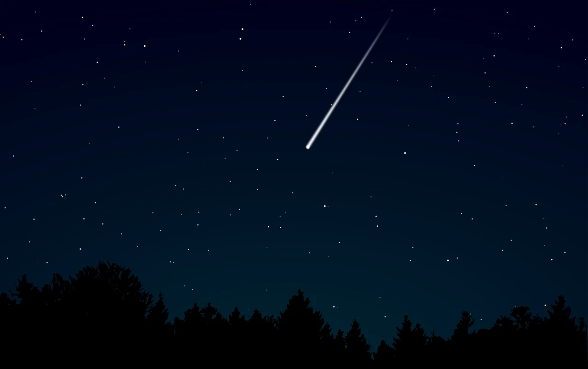

Sora Kuuhaku
"O Céu Vazio."
Perfil
Físico
- Cabelos: Castanhos longos e ondulados
- Olhos: Grandes, puxados e azuis
- Rosto: Fino e nariz pequeno
- Pele: Pálida como a luz da lua
- Marca: Cicatriz negra com pontos luminosos no lado direito do rosto
Personalidade
- Frio, não demonstra emoções
- Extremamente inteligente e calculista
- Desajeitado socialmente, péssima comunicação
- Não hesita em usar outros como "ferramentas"
- Sede insaciável por conhecimento
- Calmo e metódico
O Aglomerado de Plêiades
Em uma noite comum, quando todos dormiam pela noite, o céu mudou. Uma luz rasgou o firmamento. No horizonte, algo caía lentamente, deixando um rastro prateado que parecia dividir os próprios céus.
Um meteorito?
Não.
Uma estrela.
Ela havia abandonado seu lugar entre as incontáveis luzes do Aglomerado Plêiades, como se tivesse sido arrancada do universo por uma força externa. Nenhum sábio conseguiu explicar aquele fenômeno. As nuvens se abriram, revelando um céu completamente limpo, enquanto uma intensa luz azul envolvia o mundo.
O impacto fez a terra estremecer.
Quando a poeira finalmente baixou, não havia pedra alguma na cratera.
Havia um bebê.
Sua pele era pálida como a luz da lua, seus cabelos possuíam um tom azul profundo e seus olhos brilhavam em uma cor violeta. Sobre o lado direito do rosto, uma marca negra como uma cicatriz marcava seu rosto, marcada por pequenos pontos luminosos que lembravam estrelas.
Naquela noite, a lua nova estava sob o céu, ela estava em seu ponto mais alto. Não demorou para que um grupo encontrasse o recém-nascido.
Eram membros de um antigo culto dedicado ao Deus da Lua, uma divindade esquecida pelo restante do mundo, mas venerada por seus seguidores como o verdadeiro soberano do firmamento noturno.
Para eles, não havia dúvidas, a criança era uma dádiva dos céus.
Um presente enviado pelo próprio Deus para conduzir seus fiéis.
Enquanto toda a atenção era voltada ao recém-chegado, outra criança observava tudo em silêncio.

Seu nome era Akurashi.
Assim como o bebê, possuía pele extremamente pálida e cabelos brancos como neve. Muitos o consideravam estranho desde seu nascimento, mas nunca recebeu qualquer tipo de veneração. Para o culto, era apenas mais um órfão acolhido por misericórdia.
Algumas semanas depois, durante uma cerimônia realizada sob um céu sem estrelas, os anciãos finalmente deram um nome ao menino.
Ele raramente chorava. Nunca sorria.
Seu olhar era vazio, distante, como se observasse um lugar inalcançável para qualquer ser.
Por isso recebeu o nome de Sora Kuuhaku.
"O Céu Vazio."
Ato II — Sirius
Aos quatro anos, Sora já havia percebido que era diferente das outras crianças. Desde que conseguia se lembrar, nunca havia sentido vontade de sorrir ou de chorar. Seu rosto permanecia sempre vazio, seus olhos caídos transmitiam uma frieza incomum para alguém tão pequeno, e nem mesmo ele entendia o motivo disso. No entanto, existia algo que despertava seu interesse acima de qualquer outra coisa, o conhecimento. Antes mesmo de completar três anos, já havia aprendido a ler praticamente sozinho. Passava horas folheando os livros antigos guardados pelo culto, muitos escritos em uma linguagem difícil até para os adultos. Nem sempre compreendia o significado das palavras, mas fazia questão de decorá-las. Quanto mais lia, mais perguntas surgiam. O que eram as estrelas? Por que existia uma lua? O que significava ser um deus? Por que todos se ajoelhavam diante dele? Nenhuma resposta parecia suficiente.
.png)
Entre todas as pessoas daquele lugar, havia apenas uma cuja presença fazia Sora sentir algo diferente. Não era felicidade, nem carinho, tampouco amor. Era apenas... conforto. Akurashi sempre estava ao seu lado. Desde que conseguia lembrar, era ele quem o acompanhava para todos os lugares, permanecia próximo enquanto lia e nunca reclamava quando Sora simplesmente sentava ao seu lado em silêncio. O garoto nunca conseguiu explicar por que gostava de sua companhia, mas sempre que Akurashi estava por perto, o ambiente parecia menos estranho.
Naquela noite, porém, tudo parecia diferente.
A lua cheia iluminava completamente a floresta, banhando as árvores com uma luz prateada. Os membros do culto caminhavam entre as tochas acesas carregando expressões incomuns. Normalmente eram sérios, silenciosos e quase sem emoção, mas naquela noite sorriam. Alguns até pareciam felizes. Sora observava tudo em silêncio, registrando cada detalhe. Símbolos desconhecidos haviam sido desenhados no chão com tinta branca, formando um enorme círculo no centro da clareira. Ele tentou relacioná-los aos livros que havia lido, mas nunca encontrara aqueles desenhos antes.
No centro do ritual havia um pequeno trono de madeira.
O líder apenas apontou para ele.
"Levem Sora."
Akurashi segurou delicadamente sua mão e o conduziu até o assento. Assim que Sora se sentou, sentiu a madeira fria sob seu corpo. Era desconfortável, mas permaneceu imóvel. Quando Akurashi tentou dar um passo para trás, foi imediatamente interrompido.
"O que está fazendo?"
"Permaneça ao lado dele. O tempo inteiro."
Sora ergueu discretamente o olhar para Akurashi. Não sabia explicar por quê, mas ficou satisfeito ao perceber que ele permaneceria ali. Talvez fosse porque já estivesse acostumado com sua presença.
As tochas foram erguidas e os cânticos começaram. Era uma língua completamente diferente de qualquer outra que Sora já havia encontrado nos livros do culto. Mesmo sem compreendê-la, prestou atenção em cada sílaba, tentando memorizar seus sons. Enquanto isso, um cheiro estranho começou a preencher o ar. Não era apenas fumaça. Havia algo diferente e pesado. Seus olhos acompanharam duas pessoas carregando um enorme objeto de madeira. Era comprido demais para ser um simples baú. Parecia um armário... ou talvez um caixão. Antes que pudesse pensar mais sobre aquilo, o objeto foi lançado diretamente na fogueira.
.png)
As chamas cresceram rapidamente.
Todos ao redor começaram a celebrar.
Alguns levantavam as mãos para o céu.
Outros choravam de alegria.
Sora apenas observava.
Não entendia por que estavam felizes.
Quando o fogo finalmente diminuiu, o líder abriu os braços.
"Nosso Deus aceitou nossa oferenda."
Em seguida, voltou seus olhos para Akurashi.
"Você finalmente está quase pronto."
Sora inclinou levemente a cabeça, sem compreender o significado daquelas palavras.
O líder retirou uma pequena adaga. Primeiro, fez um corte na ponta do dedo de Akurashi. Uma única gota de sangue escorreu. Depois repetiu o mesmo gesto com Sora. O garoto observou seu próprio dedo em silêncio. O sangue era exatamente igual ao de Akurashi. Por um instante, aquilo despertou sua curiosidade. Se todos sangravam da mesma forma, por que diziam que ele era diferente?
As mãos dos dois foram aproximadas até que as gotas de sangue se encontrassem. Então o líder ordenou que Akurashi repetisse uma promessa. Que entregaria sua vida. Seus sonhos. Seu futuro. Tudo o que possuía. Que protegeria Sora até seu último suspiro.
Sora permaneceu calado durante toda a cerimônia.
Não compreendia por que alguém faria uma promessa tão absoluta.
Não compreendia por que Akurashi aceitou.
Mas, quando ouviu sua resposta firme, apenas um pensamento surgiu em sua mente.
Então ele continuará ao meu lado.
Ato III — Antares
Os anos passaram rapidamente.
Conforme crescia, Sora compreendia cada vez melhor o mundo ao seu redor. Observava atentamente o comportamento dos cultistas, suas crenças, seus medos e, principalmente, sua devoção. Levou pouco tempo para perceber que toda aquela fé era previsível. Eles precisavam acreditar em algo maior do que si mesmos e, para eles, esse algo era Sora.
Foi então que entendeu.
Aquilo não passava de um jogo.
E, se o mundo era um tabuleiro, ele seria o jogador.
Sem levantar a voz, sem recorrer à violência ou demonstrar qualquer emoção, Sora passou a manipular todos ao seu redor. Utilizava as próprias crenças do culto para conduzi-los exatamente para onde desejava. Sempre que precisava convencer alguém, bastava lembrar que era o "presente enviado pelo Deus da Lua". Ninguém ousava questionar suas palavras. Aos poucos, deixou de apenas ser tratado como uma divindade e passou a agir como uma.
Sua expressão, entretanto, jamais mudou.
Mesmo durante discursos, punições ou rituais, seu rosto permanecia completamente vazio, enquanto seus olhos frios encaravam todos como peças de um enorme tabuleiro de xadrez.
A única pessoa que permanecia constantemente ao seu lado era Akurashi.
Mesmo assim, a relação entre ambos nunca se tornou calorosa. Sora raramente conversava com ele além do necessário. Em vez disso, passou a utilizá-lo como sua espada. Sempre que algum cultista desobedecia suas ordens ou demonstrava qualquer sinal de dúvida, era Akurashi quem recebia a missão de aplicar o castigo. Nunca questionava. Apenas obedecia.
Para Sora, aquilo era natural.
Toda peça possuía uma função.
E Akurashi havia nascido para cumprir a sua.
.png)
Apesar de exercer cada vez mais influência sobre o culto, seu verdadeiro interesse nunca esteve no poder.
Era o conhecimento.
Sua curiosidade infantil jamais desapareceu. Pelo contrário, apenas cresceu. Passava dias inteiros estudando livros antigos, manuscritos esquecidos e qualquer registro que pudesse encontrar. Queria compreender o funcionamento do mundo, descobrir a origem das estrelas e entender por que havia caído dos céus. Durante suas pesquisas, encontrou diversas referências a algo chamado magia. A partir daquele momento, esse tornou-se seu novo objetivo.
Se existia um poder capaz de explicar sua existência, ele o encontraria.
Aos quatorze anos, outra informação chegou até o culto.
Diversas organizações semelhantes haviam surgido ao redor do continente. Cada uma afirmava seguir uma divindade diferente e todas disputavam influência, território e fiéis. Para Sora, aquilo era inevitável. Cedo ou tarde, todos entrariam em conflito.
Então começou a se preparar.
Passou a estudar estratégias militares, posicionamento de tropas, emboscadas e formas de manipular pessoas. Sempre que possível, convencia viajantes e aldeões a se juntarem ao culto utilizando palavras cuidadosamente escolhidas. Não recorria à força. Bastava oferecer esperança e permitir que os próprios desejos das pessoas as conduzissem até ele.
A guerra era apenas uma questão de tempo.
E ela finalmente chegou.
Durante uma noite de lua cheia, enquanto o culto realizava mais uma cerimônia na floresta, um assobio cortou o silêncio.
Em seguida, dezenas de flechas surgiram entre as árvores.
Os gritos começaram imediatamente.
A fogueira que iluminava o ritual havia denunciado a posição do grupo.
Eram muitos.
Muito mais do que Sora havia previsto.
Sentado em seu trono, ele apenas observava enquanto a primeira flecha voava diretamente em sua direção. Antes que pudesse atingi-lo, Akurashi se colocou em seu caminho. A flecha atravessou seu ombro, fazendo-o recuar apenas um passo.
"Corram! Protejam o Escolhido!"
Os cultistas passaram a gritar desesperadamente enquanto tentavam conter o ataque.
Sem perder tempo, Akurashi segurou Sora pelo braço e os dois correram para o interior da floresta. Galhos quebravam sob seus pés enquanto avançavam na escuridão. Atrás deles, os sons do combate desapareciam lentamente, substituídos pelo barulho das folhas e pelas flechas cortando o ar.
Mas eles não estavam sozinhos. Os invasores conheciam aquela floresta.
Conheciam o culto.
E sabiam exatamente para onde eles fugiriam.
Uma nova flecha foi disparada.
Dessa vez, Akurashi não conseguiu alcançá-la a tempo.
A ponta atravessou o corpo de Sora.
O garoto apenas olhou para a própria ferida.
Não gritou.
Não demonstrou dor.
Permaneceu com a mesma expressão vazia de sempre.
Akurashi imediatamente sacou sua espada e ficou entre Sora e os perseguidores.
"Corra!"
Sora não respondeu.
Apenas analisou a situação.
Se Akurashi permanecesse ali, provavelmente morreria.
Mas isso não importava.
Peças existem para serem sacrificadas quando necessário.
Sem hesitar por um único instante, Sora virou as costas e correu.
Correu o mais rápido que conseguia, deixando para trás os gritos, o som das espadas e o destino de Akurashi.
Naquela noite, pela primeira vez desde que caiu dos céus...
Sora entrou em contato com o mundo além do culto.
Ato IV — Regulus
Mesmo ferido pela flecha, Sora continuou caminhando. A dor não o incomodava.
Era apenas uma informação.
Seu corpo dizia que deveria parar, mas sua mente continuava repetindo a mesma ordem.
Viva.
Depois de horas atravessando a floresta, finalmente encontrou uma cidade.
Era completamente diferente do culto.
Ali ninguém rezava para ele.
Ninguém abaixava a cabeça.
Era apenas mais um garoto sujo caminhando pelas ruas.
Sora passou os primeiros dias escondido. Roubava pequenos pedaços de pão durante a madrugada, observava as pessoas pelas janelas e escutava conversas nas tavernas. Quanto mais via aquele lugar, mais entendia como funcionava a sociedade.
Dinheiro.
Poder.
Influência.
Não importava quem estava certo.
Importava quem possuía mais.
Percebeu comerciantes enganando clientes, nobres comprando soldados para esconder crimes, religiosos vendendo falsas esperanças em troca de moedas e crianças sendo abandonadas nas ruas enquanto adultos fingiam não enxergá-las.
.png)
Aquilo era diferente do culto.
Mas, ao mesmo tempo...
Era exatamente igual. Todos apenas acreditavam em deuses diferentes. Enquanto uns adoravam uma lua...
Outros adoravam ouro, status, medo.
Apenas mudavam os nomes, as correntes continuavam existindo.
Foi naquele momento que Sora compreendeu algo.
A sociedade precisava acreditar em alguma mentira para continuar vivendo.
E essa mentira podia ser criada.
Se as pessoas eram tão facilmente manipuladas por palavras, símbolos e promessas...
Então o mundo inteiro era manipulável.
Durante meses, Sora caminhou entre cidades, observando reis, sacerdotes, mercadores e criminosos. Sempre permanecia em silêncio. Fazia perguntas, aprendia novos idiomas, estudava política, economia, estratégias militares e qualquer livro que encontrasse.
Seu conhecimento crescia.
Assim como seu desprezo.
Quanto mais aprendia sobre os seres...
Menos conseguia respeitá-los.
Todos diziam buscar justiça.
Mas vendiam justiça.
Todos diziam proteger os fracos.
Mas exploravam os fracos.
Todos diziam amar seus deuses.
Mas matavam em seus nomes.
Ao perceber isso, Sora sorriu pela primeira vez.
Não era um sorriso de felicidade, longe disso.. era o sorriso de alguém que finalmente encontrara uma resposta.
A sociedade era falha.
E, se era falha...
Podia ser destruída.
.png)
Naquela noite, fez uma promessa apenas para si.
"Um dia farei este mundo compreender o próprio erro."
"Arrancarei todas as máscaras de todos."
"E quando tudo terminar..."
"Não restará ninguém para repetir os mesmos pecados."
Entretanto, seu corpo já havia ultrapassado o próprio limite. A flecha que o atingira meses antes nunca recebera tratamento adequado. A infecção havia se espalhado lentamente, consumindo-o por dentro enquanto ele ignorava completamente os sinais.
Certa noite, enquanto caminhava por uma estrada vazia, suas pernas finalmente cederam.
Pela primeira vez...
Seu corpo venceu sua vontade.
Deitado sobre a terra, Sora olhou para o céu.
As estrelas permaneciam exatamente onde estavam… Indiferentes.
Ele estendeu lentamente a mão em direção às Plêiades.
Não para pedir ajuda. Mas porque ainda não havia encontrado todas as respostas.
Seu último pensamento não foi sobre Akurashi.
Nem sobre o culto.
"Ainda não terminei."
Seu braço caiu lentamente.
A respiração cessou.
O garoto que havia caído das estrelas morreu sem concluir seu objetivo.